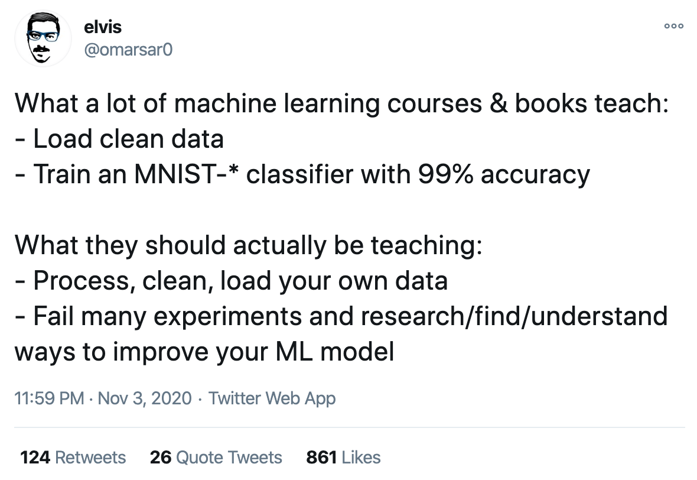
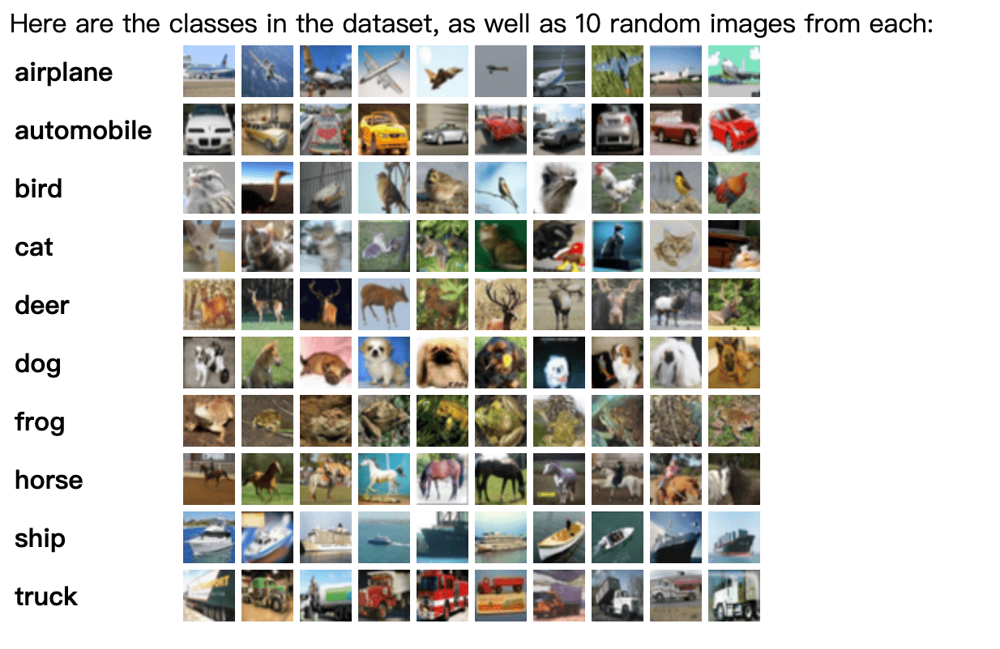
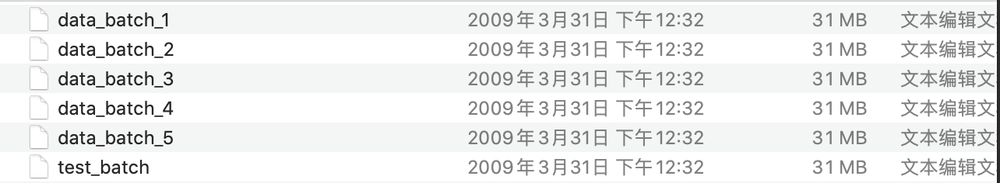
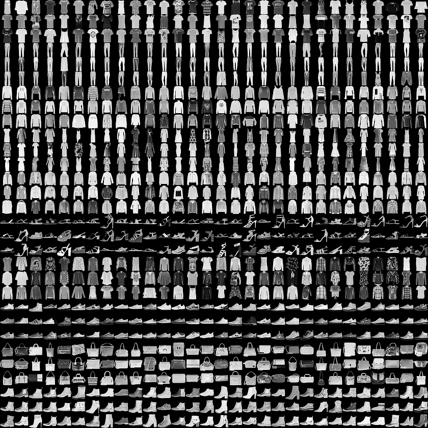
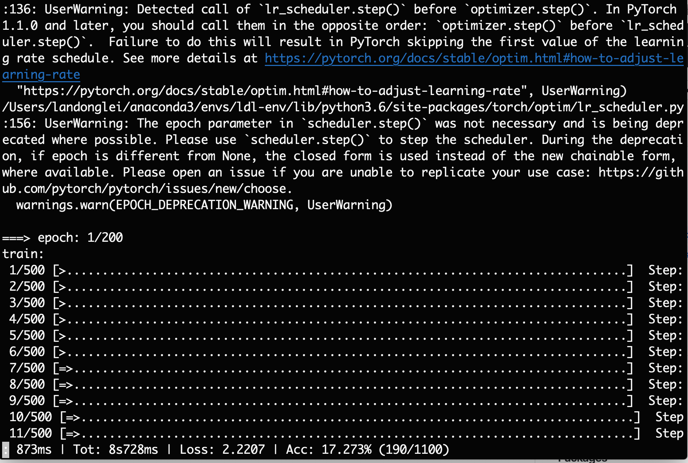
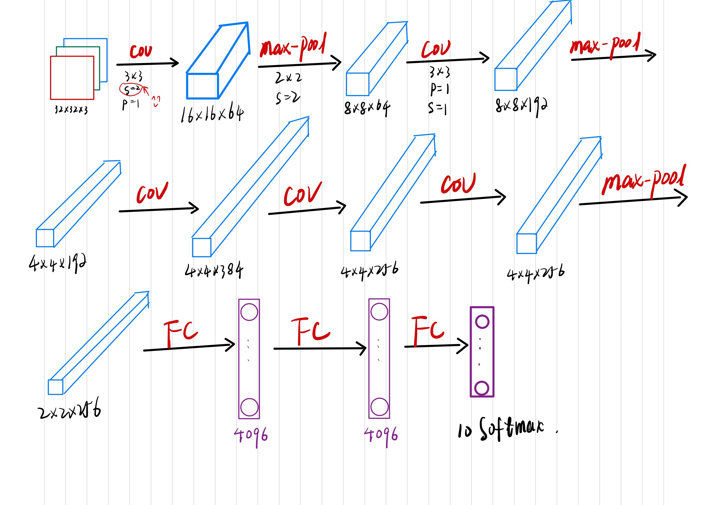

CIFAR-10、PyTorch 和 AlexNet
先在自己的电脑上走一遍，保证语法和逻辑不会错。再放到远程配置高的电脑上跑。
这些经典的神经网络结构，要熟悉到能白板编程的技能。
最近看到有关机器学习的一个推特，觉得很有启发。
What a lot of machine learning courses & books teach:
- Load clean data
- Train an MNIST-* classifier with 99% accuracy
What they should actually be teaching:
- Process, clean, load your own data
- Fail many experiments and research/find/understand ways to improve your ML model
很多机器学习课程与书籍所教授的内容：
- 加载干净的数据
- 训练一个MNIST-* 分类器，准确率达 99%。
他们其实应该教什么。
- 处理、清理、加载自己的数据
- 多次实验失败，研究/发现/了解改进你的 ML 模型的方法。

环境准备
第一步：启动虚拟环境
➜ source activate ldl-env
第二步：安装 PyTorch
(ldl-env) ➜ workspace conda install pytorch torchvision torchaudio -c pytorch

要多看 PyTorch 的官方文档。
数据集
torchvision.datasets
torchvision.datasets 中包含了较多的数据集
-
MNIST（0-9 手写数字）
-
COCO（用于图像标注和目标检测）
-
LSUN（包含数百万个场景和对象的彩色图像）
-
CIFAR-10

CIFAR-10 dataset (Canadian Institute For Advanced Research) ：https://www.cs.toronto.edu/~kriz/cifar.html
CIFAR-10 和 CIFAR-100 是一个包含 8000 万张微小图像的数据集，由 Alex Krizhevsky、Vinod Nair 和 Geoffrey Hinton 收集。
CIFAR-10 数据集包含 10 个类别，总共 60000 张 $$32\times32$$ 彩色图像。
每个类别 6000 张图像。
有 50000 张训练图像（train set）和 10000 张测试图像（test set）。
数据集分为 5 个训练 Batch 和 1 个测试 Batch。每个Train Batch 有 10000 张图像，Test Batch 正好包含 1000 张从每个类中随机选取的图像。 Train Batch 按随机顺序包含剩余的图像，但一些 Train Batch 可能包含来自一个类的图像比另一个类更多。在它们之间，Train batch 正好包含来自每个类的 5000 张图像。

- Fashion-MNIST
GitHub: https://github.com/zalandoresearch/fashion-mnist

每个训练和测试样本都按照以下类别进行了标注：
| 标注编号 | 描述 |
|---|---|
| 0 | T-shirt/top（T恤） |
| 1 | Trouser（裤子） |
| 2 | Pullover（套衫） |
| 3 | Dress（裙子） |
| 4 | Coat（外套） |
| 5 | Sandal（凉鞋） |
| 6 | Shirt（汗衫） |
| 7 | Sneaker（运动鞋） |
| 8 | Bag（包） |
| 9 | Ankle boot（踝靴） |
找到了一个可供参考的小项目，数据集是 CIFAR-10。

AlexNet
GitHub：pytorch-cifar10
输入图片的大小为 $$32\times32\times3$$
class AlexNet(nn.Module):
def __init__(self, num_classes=NUM_CLASSES):
super(AlexNet, self).__init__()
self.features = nn.Sequential(
nn.Conv2d(3, 64, kernel_size=3, stride=2, padding=1),
nn.ReLU(inplace=True),
nn.MaxPool2d(kernel_size=2),
nn.Conv2d(64, 192, kernel_size=3, padding=1),
nn.ReLU(inplace=True),
nn.MaxPool2d(kernel_size=2),
nn.Conv2d(192, 384, kernel_size=3, padding=1),
nn.ReLU(inplace=True),
nn.Conv2d(384, 256, kernel_size=3, padding=1),
nn.ReLU(inplace=True),
nn.Conv2d(256, 256, kernel_size=3, padding=1),
nn.ReLU(inplace=True),
nn.MaxPool2d(kernel_size=2),
)
self.classifier = nn.Sequential(
nn.Dropout(),
nn.Linear(256 * 2 * 2, 4096),
nn.ReLU(inplace=True),
nn.Dropout(),
nn.Linear(4096, 4096),
nn.ReLU(inplace=True),
nn.Linear(4096, num_classes),
)
def forward(self, x):
x = self.features(x)
x = x.view(x.size(0), 256 * 2 * 2)
x = self.classifier(x)
return x
我按照吴恩达老师的视频教程，绘制了一个图，如下。

Papers with Code
这里的图片输入应该是 $$227\times227\times3$$，所以网络的内部 kernel_size 和 stride 会有不同。
class AlexNet(nn.Module):
"""
Neural network model consisting of layers propsed by AlexNet paper.
"""
def __init__(self, num_classes=1000):
"""
Define and allocate layers for this neural net.
Args:
num_classes (int): number of classes to predict with this model
"""
super().__init__()
# input size should be : (b x 3 x 227 x 227)
# The image in the original paper states that width and height are 224 pixels, but
# the dimensions after first convolution layer do not lead to 55 x 55.
self.net = nn.Sequential(
nn.Conv2d(in_channels=3, out_channels=96, kernel_size=11, stride=4), # (b x 96 x 55 x 55)
nn.ReLU(),
nn.LocalResponseNorm(size=5, alpha=0.0001, beta=0.75, k=2), # section 3.3
nn.MaxPool2d(kernel_size=3, stride=2), # (b x 96 x 27 x 27)
nn.Conv2d(96, 256, 5, padding=2), # (b x 256 x 27 x 27)
nn.ReLU(),
nn.LocalResponseNorm(size=5, alpha=0.0001, beta=0.75, k=2),
nn.MaxPool2d(kernel_size=3, stride=2), # (b x 256 x 13 x 13)
nn.Conv2d(256, 384, 3, padding=1), # (b x 384 x 13 x 13)
nn.ReLU(),
nn.Conv2d(384, 384, 3, padding=1), # (b x 384 x 13 x 13)
nn.ReLU(),
nn.Conv2d(384, 256, 3, padding=1), # (b x 256 x 13 x 13)
nn.ReLU(),
nn.MaxPool2d(kernel_size=3, stride=2), # (b x 256 x 6 x 6)
)
# classifier is just a name for linear layers
self.classifier = nn.Sequential(
nn.Dropout(p=0.5, inplace=True),
nn.Linear(in_features=(256 * 6 * 6), out_features=4096),
nn.ReLU(),
nn.Dropout(p=0.5, inplace=True),
nn.Linear(in_features=4096, out_features=4096),
nn.ReLU(),
nn.Linear(in_features=4096, out_features=num_classes),
)
self.init_bias() # initialize bias
def init_bias(self):
for layer in self.net:
if isinstance(layer, nn.Conv2d):
nn.init.normal_(layer.weight, mean=0, std=0.01)
nn.init.constant_(layer.bias, 0)
# original paper = 1 for Conv2d layers 2nd, 4th, and 5th conv layers
nn.init.constant_(self.net[4].bias, 1)
nn.init.constant_(self.net[10].bias, 1)
nn.init.constant_(self.net[12].bias, 1)
def forward(self, x):
"""
Pass the input through the net.
Args:
x (Tensor): input tensor
Returns:
output (Tensor): output tensor
"""
x = self.net(x)
x = x.view(-1, 256 * 6 * 6) # reduce the dimensions for linear layer input
return self.classifier(x)
Zhihu 知乎
https://zhuanlan.zhihu.com/p/29786939
给出了局部响应归一化的实现。
import torch.nn as nn
from torch.nn import functional as F
from torch.autograd import Variable
class LRN(nn.Module):
def __init__(self, local_size=1, alpha=1.0, beta=0.75, ACROSS_CHANNELS=False):
super(LRN, self).__init__()
self.ACROSS_CHANNELS = ACROSS_CHANNELS
if self.ACROSS_CHANNELS:
self.average=nn.AvgPool3d(kernel_size=(local_size, 1, 1), #0.2.0_4会报错，需要在最新的分支上AvgPool3d才有padding参数
stride=1,
padding=(int((local_size-1.0)/2), 0, 0))
else:
self.average=nn.AvgPool2d(kernel_size=local_size,
stride=1,
padding=int((local_size-1.0)/2))
self.alpha = alpha
self.beta = beta
def forward(self, x):
if self.ACROSS_CHANNELS:
div = x.pow(2).unsqueeze(1)
div = self.average(div).squeeze(1)
div = div.mul(self.alpha).add(1.0).pow(self.beta)#这里的1.0即为bias
else:
div = x.pow(2)
div = self.average(div)
div = div.mul(self.alpha).add(1.0).pow(self.beta)
x = x.div(div)
return x
这个专门分了 layer1， layer2， layer3 ，更加的好理解了。
from torch import nn
from torch.nn import functional as F
from torch.autograd import Variable
import torch
class AlexNet(nn.Module):
def __init__(self, num_classes = 1000):#imagenet数量
super().__init__()
self.layer1 = nn.Sequential(
nn.Conv2d(in_channels=3, out_channels=96, kernel_size=11, stride=4),
nn.ReLU(inplace=True),
nn.MaxPool2d(kernel_size=3, stride=2),
LRN(local_size=5, alpha=1e-4, beta=0.75, ACROSS_CHANNELS=True)
)
self.layer2 = nn.Sequential(
nn.Conv2d(in_channels=96, out_channels=256, kernel_size=5, groups=2, padding=2),
nn.ReLU(inplace=True),
nn.MaxPool2d(kernel_size=3, stride=2),
LRN(local_size=5, alpha=1e-4, beta=0.75, ACROSS_CHANNELS=True)
)
self.layer3 = nn.Sequential(
nn.Conv2d(in_channels=256, out_channels=384, padding=1, kernel_size=3),
nn.ReLU(inplace=True)
)
self.layer4 = nn.Sequential(
nn.Conv2d(in_channels=384, out_channels=384, kernel_size=3, padding=1),
nn.ReLU(inplace=True)
)
self.layer5 = nn.Sequential(
nn.Conv2d(in_channels=384, out_channels=256, kernel_size=3, padding=1),
nn.ReLU(inplace=True),
nn.MaxPool2d(kernel_size=3, stride=2)
)
#需要针对上一层改变view
self.layer6 = nn.Sequential(
nn.Linear(in_features=6*6*256, out_features=4096),
nn.ReLU(inplace=True),
nn.Dropout()
)
self.layer7 = nn.Sequential(
nn.Linear(in_features=4096, out_features=4096),
nn.ReLU(inplace=True),
nn.Dropout()
)
self.layer8 = nn.Linear(in_features=4096, out_features=num_classes)
def forward(self, x):
x = self.layer5(self.layer4(self.layer3(self.layer2(self.layer1(x)))))
x = x.view(-1, 6*6*256)
x = self.layer8(self.layer7(self.layer6(x)))
return x
思考
我有几个疑问？
-
AlexNet 论文里面的数据集使用的是 $$256\times256\times3$$，采用数据增强后真正输入到网络的图像 size 为 $$224\times224\times3$$，但是编程实现的时候，输入的大多是 $$227\times227\times3$$ 这个 227 是怎么算出来的？
-
2021.02.05：224 应该是作者的一个失误，其实没关系的。将 224 代入网络，就会发现 224 存在的问题，227 是一个更好的取值。
-
-
我感觉有人用 224，有人用 227，有什么区别吗？
-
2021.02.05：用 227，不要用 224。代入网络推一遍就知道为什么了！
-
-
上文我记录的第一个程序
pytorch-cifar10，每张图像的输入是 $$32\times32\times3$$。这种情况下一种处理方式是resize成 224；另一种是更改网络的 kernel_size、padding、stride，修改过之后的网络还能叫做是 AlexNet 吗？-
2021.02.05：我认为修改后的网络就不能叫做 AlexNet 了。
AlexNet 中的卷积核大小、步长、填充都是作者为 ImageNet 数据集精心设计的。
-